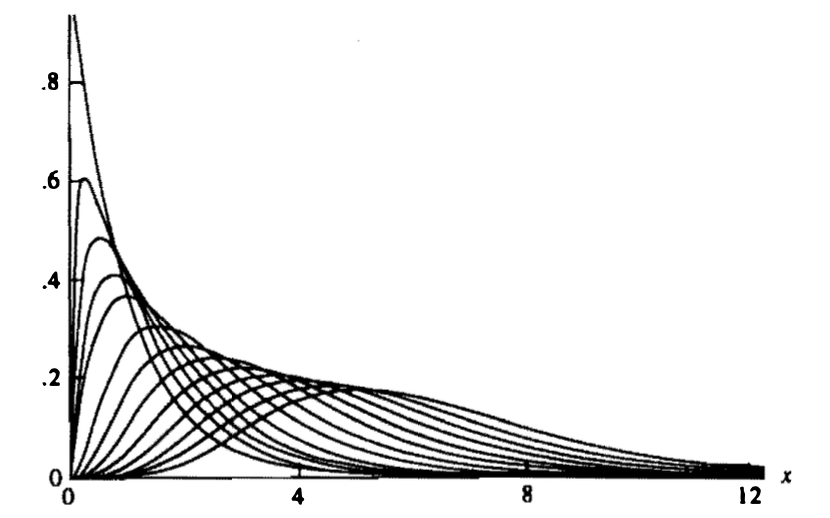
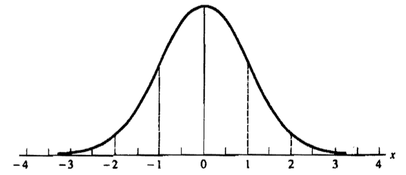
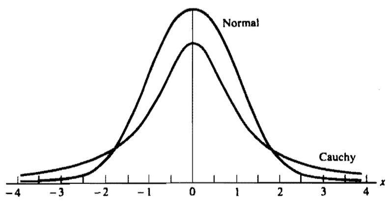
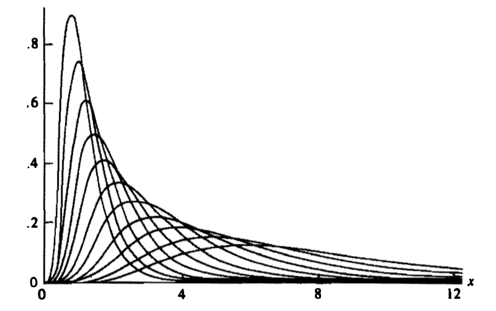

[统计推断]第三章·常见分布族（二）
\[ \newcommand{\E}{\mathbb E} \newcommand{\Var}{\mathrm{Var}} \newcommand{\Beta}{\mathrm{B}} \]
本篇列举常见的连续分布。
1 均匀分布
\[ f(x\vert a,b)=\begin{cases}\frac{1}{b-a},&x\in[a,b]\\0,&x\notin [a,b]\end{cases} \]
期望： \[\E X=\int_a^b\frac{x}{b-a}\mathrm dx=\frac{a+b}{2}\]
方差 \[\Var X=\int_a^b\frac{\left(x-\frac{a+b}{2}\right)^2}{b-a}\mathrm dx=\frac{(a-b)^2}{12}\]
2 伽玛分布
\(\Gamma\) 函数： \[ \Gamma(\alpha)=\int_0^{+\infty}t^{\alpha-1}e^{-t}\mathrm dt \] 利用分部积分法易得递推式： \[ \Gamma(\alpha+1)=\alpha\Gamma(\alpha),\quad \alpha>0 \] 又 \(\Gamma(1)=1\)，因此对于正整数 \(n\)，\(\Gamma(n)=(n-1)!\).
基于 \(\Gamma\) 函数，可以定义参数为 \((\alpha,\beta)\) 的伽玛分布族： \[ f(x\vert \alpha,\beta)=\frac{1}{\Gamma(\alpha)\beta^\alpha}x^{\alpha-1}e^{-x/\beta},\quad 0<x<+\infty,\,\alpha>0,\,\beta>0 \] 其中 \(\alpha\) 主要影响分布的峰起状态，称为形状参数；\(\beta\) 主要影响分布的散度情况，称为尺度参数；记该分布为 \(\text{Gamma}(\alpha,\beta)\).

期望 \[\begin{align}\E X&=\frac{1}{\Gamma(\alpha)\beta^\alpha}\int_0^{+\infty}x^{\alpha}e^{-x/\beta}\mathrm dx\\&=\frac{\beta}{\Gamma(\alpha)}\int_0^{+\infty}t^{\alpha}e^{-t}\mathrm dt&&t=x/\beta\\&=\frac{\beta}{\Gamma(\alpha)}\Gamma(\alpha+1)\\&=\alpha\beta\end{align}\]
二阶矩 \[\begin{align}\E X^2&=\frac{1}{\Gamma(\alpha)\beta^\alpha}\int_0^{+\infty}x^{\alpha+1} e^{-x/\beta}\mathrm dx\\&=\frac{\beta^2}{\Gamma(\alpha)}\int_0^{+\infty}t^{\alpha+1} e^{-t}\mathrm dt&&t=x/\beta\\&=\frac{\beta^2}{\Gamma(\alpha)}\Gamma(\alpha+2)\\&=\alpha(\alpha+1)\beta^2\end{align}\]
方差 \[\Var X=\E X^2-(\E X)^2=\alpha\beta^2\]
矩母函数：第二章已经推导过了 \[M_X(t)=\left(\frac{1}{1-\beta t}\right)^\alpha,\quad t<\frac{1}{\beta}\]
伽玛分布与泊松分布：设 \(X\) 是参数为 \((\alpha,\beta)\) 的伽玛随机变量，其中 \(\alpha\) 为整数，\(Y\) 服从参数为 \((x/\beta)\) 的泊松分布，则对任意 \(x\)，都有： \[ P(X\leq x)=P(Y\geq \alpha) \] Proof. 反复运用分部积分法。
3 \(\chi^2\) 分布
在伽玛分布中，若令 \(\alpha=p/2,\,\beta=2\)，其中 \(p\) 是整数，则伽玛概率密度函数变为： \[ f(x\vert p)=\frac{1}{\Gamma(p/2)2^{p/2}}x^{p/2-1}e^{-x/2},\quad 0<x<\infty \] 这是自由度为 \(p\) 的 \(\chi^2\) 概率密度函数。
4 指数分布
在伽玛分布中，若令 \(\alpha=1\)，则得到指数概率密度函数： \[ f(x\vert \beta)=\frac{1}{\beta}e^{-x/\beta},\quad 0<x<\infty \]
期望（分部积分易得） \[\E X=\beta\]
方差（分部积分易得） \[\Var X=\beta^2\]
无记忆性：对任意 \(s>t\geq 0\)，有 \[P(X>s\vert X>t)=P(X>s-t)\]
5 Weibull 分布
设 \(X\) 服从参数为 \(\beta\) 的指数分布，则 \(Y=X^{1/\gamma}\) 服从参数为 \((\gamma,\beta)\) 的 Weibull 分布，即其概率密度函数为： \[ f(y\vert \gamma,\beta)=\frac{\gamma}{\beta}y^{\gamma-1}e^{-y^\gamma/\beta},\quad 0<y<\infty,\,\gamma>0,\,\beta>0 \]
推导：由于 \(y=g(x)=x^{1/\gamma}\) 是单调函数，根据第二章的结论可知： \[ f_Y(y)=f_X(g^{-1}(y))\left|\frac{\mathrm d}{\mathrm dy}g^{-1}(y)\right|=\frac{\gamma}{\beta}y^{\gamma-1}e^{-y^\gamma/\beta} \]
Weibull 分布广泛引用于寿命分析和危险率函数的建模。
6 正态分布
\(X\) 服从参数为 \((\mu,\sigma^2)\) 的正态分布： \[ f(x\vert \mu,\sigma^2)=\frac{1}{\sqrt{2\pi}\sigma}\exp\frac{-(x-\mu)^2}{2\sigma^2},\quad -\infty<x<+\infty \] 记作 \(N(\mu,\sigma^2)\).
验证上述概率密度函数积分为 \(1\) 需要一些技巧，一个常见的证法是转换为二重积分。首先，作变量代换 \(z=(x-\mu)/\sigma\)，则易知我们只需要证明： \[ \int_0^{+\infty}e^{-z^2/2}\mathrm dz=\sqrt{\frac{\pi}{2}} \] 我们计算其平方并使用极坐标换元： \[ \begin{align} \left(\int_0^{+\infty}e^{-z^2/2}\mathrm dz\right)^2&=\left(\int_0^{+\infty}e^{-t^2/2}\mathrm dt\right)\left(\int_0^{+\infty}e^{-u^2/2}\mathrm du\right)\\ &=\int_0^{+\infty}\int_0^{+\infty}e^{-(t^2+u^2)/2}\mathrm dt\mathrm du\\ &=\int_0^{+\infty}\int_0^{\pi/2}re^{-r^2/2}\mathrm d\theta\mathrm dr\\ &=\frac{\pi}{2}\left.e^{-r^2/2}\right|_{+\infty}^0=\frac{\pi}{2} \end{align} \] 事实上，若令 \(w=z^2/2\)，则上述积分本质是 \(\Gamma(1/2)\)，即： \[ \Gamma(1/2)=\int_0^{+\infty}w^{-1/2}e^{-w}\mathrm dw=\sqrt\pi \]
期望 \[\E X=\mu\]
方差 \[\Var X=\sigma^2\]
矩母函数 \[\begin{align}M_X(t)&=\E[e^{tX}]\\&=\frac{1}{\sqrt{2\pi}\sigma}\int_{-\infty}^{+\infty}e^{tx}e^{-{(x-\mu)^2}/{2\sigma^2}}\mathrm dx\\&=\frac{1}{\sqrt{2\pi}}\int_{-\infty}^{+\infty}e^{t(\sigma s+\mu)}e^{-{s^2}/{2}}\mathrm ds&&s=(x-\mu)/\sigma\\&=\frac{e^{t\mu}}{\sqrt{2\pi}}\int_{-\infty}^{+\infty}e^{t^2\sigma^2/2}e^{-{(s-t\sigma)^2}/{2}}\mathrm ds\\&=e^{\mu t+\sigma^2t^2/2}\end{align}\]
对正态分布的概率密度函数求导易知，其在 \(x=\mu\) 处取得极值，\(\mu\pm\sigma\) 是拐点。

正态分布常用于近似其他分布，但怎样的近似足够好并无绝对的标准。以二项分布为例，经验上当 \(\min(np,n(1-p))\geq 5\) 时，可使用 \(N(np, np(1-p))\) 近似 \(\text{Binomial}(n,p)\).
但由于二项分布是离散分布，在近似时使用连续性校正可以使近似更精确：设 \(X\sim\text{Binomial}(n,p)\)，\(Y\sim N(np,np(1-p))\)，则： \[ P(X\leq x)\approx P(Y\leq x+1/2)\quad P(X\geq x)\approx P(Y\geq x-1/2) \]
7 贝塔分布
\(\Beta\) 函数： \[ \Beta(\alpha,\beta)=\int_0^1 x^{\alpha-1}(1-x)^{\beta-1}\mathrm dx \] \(\Beta\) 函数和 \(\Gamma\) 函数的关系： \[ \Beta(\alpha,\beta)=\frac{\Gamma(\alpha)\Gamma(\beta)}{\Gamma(\alpha+\beta)} \] 一般不直接处理 \(\Beta\) 函数，而是用这个关系式转化成 \(\Gamma\) 函数。
贝塔分布： \[ f(x\vert\alpha,\beta)=\frac{1}{\Beta(\alpha,\beta)}x^{\alpha-1}(1-x)^{\beta-1},\quad 0<x<1,\,\alpha>0,\,\beta>0 \]
\(n\) 阶矩 \[\begin{align}\E X^n&=\frac{1}{\Beta(\alpha,\beta)}\int_0^1 x^nx^{\alpha-1}(1-x)^{\beta-1}\mathrm dx\\&=\frac{\Beta(\alpha+n,\beta)}{\Beta(\alpha,\beta)}\\&=\frac{\Gamma(\alpha+n)\Gamma(\alpha+\beta)}{\Gamma(\alpha+\beta+n)\Gamma(\alpha)}\end{align}\]
期望 \[\E X=\frac{\Gamma(\alpha+1)\Gamma(\alpha+\beta)}{\Gamma(\alpha+\beta+1)\Gamma(\alpha)}=\frac{\alpha}{\alpha+\beta}\]
二阶矩 \[\E X^2=\frac{\Gamma(\alpha+2)\Gamma(\alpha+\beta)}{\Gamma(\alpha+\beta+2)\Gamma(\alpha)}=\frac{(\alpha+1)\alpha}{(\alpha+\beta+1)(\alpha+\beta)}\]
方差 \[\Var X=\E X^2-(\E X)^2=\frac{\alpha\beta}{(\alpha+\beta)^2(\alpha+\beta+1)}\]
8 柯西分布
柯西分布是 \((-\infty,+\infty)\) 上的一类对称钟形分布，概率密度函数为： \[ f(x\vert \theta)=\frac{1}{\pi}\frac{1}{1+(x-\theta)^2},\quad-\infty<x<+\infty,\,-\infty<\theta<+\infty \] 第二章已经证明过，柯西分布期望不存在，于是任意阶矩也不存在，矩母函数亦不存在。

两个标准正态分布之比就是柯西分布。
9 对数正态分布
若 \(\log X\sim N(\mu,\sigma^2)\)，则称 \(X\) 服从对数正态分布。利用第二章随机变量的单调函数相关结论，易知： \[ f(x\vert\mu,\sigma^2)=\frac{1}{\sqrt{2\pi}\sigma}\frac{1}{x}\exp\frac{-(\log x-\mu)^2}{2\sigma^2},\quad 0<x<+\infty,\,-\infty<\mu<+\infty,\,\sigma>0 \]
期望：设 \(Y=\log X\sim N(\mu,\sigma^2)\)，则： \[\E X=\E e^{\log X}=\E e^Y=M_Y(1)=e^{\mu+\sigma^2/2}\]
二阶矩 \[\E X^2=\E e^{2\log X}=\E e^{2Y}=M_Y(2)=e^{2\mu+2\sigma^2}\]
方差 \[\Var X=\E X^2-(\E X)^2=e^{2\mu+2\sigma^2}-e^{2\mu+\sigma^2}\]
对数正态分布广泛应用于右偏变量的建模，例如工资。

10 双指数分布
将指数分布关于原点作对称并平移 \(\mu\) 个单位，就得到了双指数分布，其概率密度函数为： \[ f(x\vert \mu,\sigma)=\frac{1}{2\sigma}e^{-|x-\mu|/\sigma},\quad -\infty<x<+\infty,\,-\infty<\mu<+\infty,\,\sigma>0 \] 双指数分布是尾部很粗的对称分布，任意阶矩都存在。
期望 \[\begin{align}\E X&=\frac{1}{2\sigma}\int_{-\infty}^{+\infty}xe^{-|x-\mu|/\sigma}\mathrm dx\\&=\frac{1}{2\sigma}\left(\int_{\mu}^{+\infty}xe^{-(x-\mu)/\sigma}\mathrm dx+\int_{-\infty}^{\mu}xe^{(x-\mu)/\sigma}\mathrm dx\right)\\&=\mu\end{align}\]
方差 \[\Var X=2\sigma^2\]